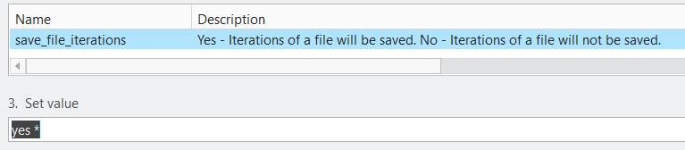

Creo Parametric アプリケーションが部品のバージョン管理を行います。チェックインおよびチェックアウトのたびに、レポートとともに部品のバージョン情報が PLM 上で管理されます。レポートは、該当する部品バージョンに対してチェックインされます。
ユーザーが部品をチェックインするまでは、レポートはローカルで上書きされます。チェックインが行われると、最終的なレポートが該当するバージョンに添付されます。
ご質問や問題がある場合は、dfmpro.support@hcl-software.com のテクニカルサポートチームまでお問い合わせください。
この場合、古い *.dfmr およびレポートは、新しい部品／アセンブリのリビジョンに対する添付ファイルとして引き継がれます。この状態では、*.dfmr およびレポートは部品／アセンブリのリビジョンと同期していません。PLM へ部品をチェックインする前に解析を実行する運用を行ってください。
注記：
組織で config.sup ファイルを使用している場合、Windchill から開いたモデルに対して解析を実行するには、「save_file_iterations」オプションを「Yes」に設定する必要があります。
